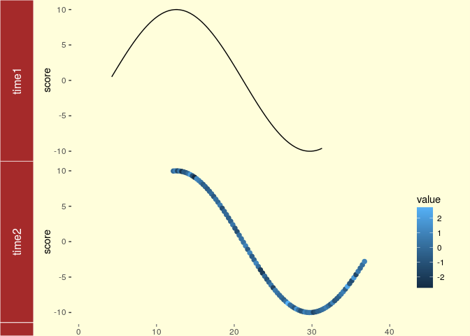

Note: the most recent version of this tutorial can be found here and a slide show here.
Overview
Graphics in R
- Powerful environment for visualizing scientific data
- Integrated graphics and statistics infrastructure
- Publication quality graphics
- Fully programmable
- Highly reproducible
- Full LaTeX, Sweave, knitr and R Markdown support.
support
- Vast number of R packages with graphics utilities
Documentation on Graphics in R
- General
- Interactive graphics
Graphics Environments
- Viewing and savings graphics in R
- On-screen graphics
- postscript, pdf, svg
- jpeg/png/wmf/tiff/…
- Four major graphics environments
- Low-level infrastructure
- R Base Graphics (low- and high-level)
grid: Manual, Book
- High-level infrastructure
Base Graphics
Overview
- Important high-level plotting functions
plot: generic x-y plottingbarplot: bar plotsboxplot: box-and-whisker plothist: histogramspie: pie chartsdotchart: cleveland dot plotsimage, heatmap, contour, persp: functions to generate image-like plotsqqnorm, qqline, qqplot: distribution comparison plotspairs, coplot: display of multivariant data
- Help on these functions
?myfct</span></span>?plot</span></span>?par</span></span>
- Matrices and data frames
- Vectors
- Named vectors
Scatter Plots
Basic scatter plots
Sample data set for subsequent plots
r
set.seed(1410)
y <- matrix(runif(30), ncol=3, dimnames=list(letters[1:10], LETTERS[1:3]))
plot(y[,1], y[,2])

All pairs
r
pairs(y)

Plot labels
r
plot(y[,1], y[,2], pch=20, col="red", main="Symbols and Labels")
text(y[,1]+0.03, y[,2], rownames(y))

More examples
Print instead of symbols the row names
r
plot(y[,1], y[,2], type="n", main="Plot of Labels")
text(y[,1], y[,2], rownames(y))
Usage of important plotting parameters
r
grid(5, 5, lwd = 2)
op <- par(mar=c(8,8,8,8), bg="lightblue")
plot(y[,1], y[,2], type="p", col="red", cex.lab=1.2, cex.axis=1.2,
cex.main=1.2, cex.sub=1, lwd=4, pch=20, xlab="x label",
ylab="y label", main="My Main", sub="My Sub")
par(op)
Important arguments}
- mar: specifies the margin sizes around the plotting area in order: c(bottom, left, top, right)
- col: color of symbols
- pch: type of symbols, samples: example(points)
- lwd: size of symbols
- cex.*: control font sizes
- For details see ?par
Add a regression line to a plot
r
plot(y[,1], y[,2])
myline <- lm(y[,2]~y[,1]); abline(myline, lwd=2)

r
summary(myline)
##
## Call:
## lm(formula = y[, 2] ~ y[, 1])
##
## Residuals:
## Min 1Q Median 3Q Max
## -0.40357 -0.17912 -0.04299 0.22147 0.46623
##
## Coefficients:
## Estimate Std. Error t value Pr(>|t|)
## (Intercept) 0.5764 0.2110 2.732 0.0258 *
## y[, 1] -0.3647 0.3959 -0.921 0.3839
## ---
## Signif. codes: 0 '***' 0.001 '**' 0.01 '*' 0.05 '.' 0.1 ' ' 1
##
## Residual standard error: 0.3095 on 8 degrees of freedom
## Multiple R-squared: 0.09589, Adjusted R-squared: -0.01712
## F-statistic: 0.8485 on 1 and 8 DF, p-value: 0.3839
Same plot as above, but on log scale
r
plot(y[,1], y[,2], log="xy")

Add a mathematical expression to a plot
r
plot(y[,1], y[,2]); text(y[1,1], y[1,2],
expression(sum(frac(1,sqrt(x^2*pi)))), cex=1.3)

Exercise 1
- Task 1: Generate scatter plot for first two columns in
iris data frame and color dots by its Species column.
- Task 2: Use the
xlim/ylim arguments to set limits on the x- and y-axes so that all data points are restricted to the left bottom quadrant of the plot.
Structure of iris data set:
r
class(iris)
## [1] "data.frame"
r
iris[1:4,]
## Sepal.Length Sepal.Width Petal.Length Petal.Width Species
## 1 5.1 3.5 1.4 0.2 setosa
## 2 4.9 3.0 1.4 0.2 setosa
## 3 4.7 3.2 1.3 0.2 setosa
## 4 4.6 3.1 1.5 0.2 setosa
r
table(iris$Species)
##
## setosa versicolor virginica
## 50 50 50
Line Plots
Single Data Set
r
plot(y[,1], type="l", lwd=2, col="blue")

Many Data Sets
Plots line graph for all columns in data frame y. The split.screen function is used in this example in a for loop to overlay several line graphs in the same plot.
r
split.screen(c(1,1))
## [1] 1
r
plot(y[,1], ylim=c(0,1), xlab="Measurement", ylab="Intensity", type="l", lwd=2, col=1)
for(i in 2:length(y[1,])) {
screen(1, new=FALSE)
plot(y[,i], ylim=c(0,1), type="l", lwd=2, col=i, xaxt="n", yaxt="n", ylab="",
xlab="", main="", bty="n")
}

r
close.screen(all=TRUE)
Bar Plots
Basics
r
barplot(y[1:4,], ylim=c(0, max(y[1:4,])+0.3), beside=TRUE,
legend=letters[1:4])
text(labels=round(as.vector(as.matrix(y[1:4,])),2), x=seq(1.5, 13, by=1)
+sort(rep(c(0,1,2), 4)), y=as.vector(as.matrix(y[1:4,]))+0.04)

Error bars
r
bar <- barplot(m <- rowMeans(y) * 10, ylim=c(0, 10))
stdev <- sd(t(y))
arrows(bar, m, bar, m + stdev, length=0.15, angle = 90)

Mirrored bar plot
r
df <- data.frame(group = rep(c("Above", "Below"), each=10), x = rep(1:10, 2), y = c(runif(10, 0, 1), runif(10, -1, 0)))
plot(c(0,12),range(df$y),type = "n")
barplot(height = df$y[df$group == "Above"], add = TRUE,axes = FALSE)
barplot(height = df$y[df$group == "Below"], add = TRUE,axes = FALSE)

Histograms
r
hist(y, freq=TRUE, breaks=10)

Density Plots}
r
plot(density(y), col="red")

Pie Charts
r
pie(y[,1], col=rainbow(length(y[,1]), start=0.1, end=0.8), clockwise=TRUE)
legend("topright", legend=row.names(y), cex=1.3, bty="n", pch=15, pt.cex=1.8,
col=rainbow(length(y[,1]), start=0.1, end=0.8), ncol=1)

Color Selection Utilities
Default color palette and how to change it
r
palette()
## [1] "black" "red" "green3" "blue" "cyan" "magenta" "yellow" "gray"
r
palette(rainbow(5, start=0.1, end=0.2))
palette()
## [1] "#FF9900" "#FFBF00" "#FFE600" "#F2FF00" "#CCFF00"
r
palette("default")
The gray function allows to select any type of gray shades by providing values from 0 to 1
r
gray(seq(0.1, 1, by= 0.2))
## [1] "#1A1A1A" "#4D4D4D" "#808080" "#B3B3B3" "#E6E6E6"
Color gradients with colorpanel function from gplots library
r
library(gplots)
colorpanel(5, "darkblue", "yellow", "white")
Much more on colors in R see Earl Glynn’s color chart
Arranging Several Plots on Single Page
With par(mfrow=c(nrow,ncol)) one can define how several plots are arranged next to each other.
r
par(mfrow=c(2,3)); for(i in 1:6) { plot(1:10) }

Arranging Plots with Variable Width
The layout function allows to divide the plotting device into variable numbers of rows and columns with the column-widths and the row-heights specified in the respective arguments.
r
nf <- layout(matrix(c(1,2,3,3), 2, 2, byrow=TRUE), c(3,7), c(5,5),
respect=TRUE)
# layout.show(nf)
for(i in 1:3) { barplot(1:10) }

Saving Graphics to Files
After the pdf() command all graphs are redirected to file test.pdf. Works for all common formats similarly: jpeg, png, ps, tiff, …
r
pdf("test.pdf"); plot(1:10, 1:10); dev.off()
Generates Scalable Vector Graphics (SVG) files that can be edited in vector graphics programs, such as InkScape.
r
svg("test.svg"); plot(1:10, 1:10); dev.off()
Exercise 2
Bar plots
- Task 1: Calculate the mean values for the \Rfunction{Species} components of the first four columns in the \Rfunction{iris} data set. Organize the results in a matrix where the row names are the unique values from the \Rfunction{iris Species} column and the column names are the same as in the first four \Rfunction{iris} columns.
- Task 2: Generate two bar plots: one with stacked bars and one with horizontally arranged bars.
Structure of iris data set:
r
class(iris)
## [1] "data.frame"
r
iris[1:4,]
## Sepal.Length Sepal.Width Petal.Length Petal.Width Species
## 1 5.1 3.5 1.4 0.2 setosa
## 2 4.9 3.0 1.4 0.2 setosa
## 3 4.7 3.2 1.3 0.2 setosa
## 4 4.6 3.1 1.5 0.2 setosa
r
table(iris$Species)
##
## setosa versicolor virginica
## 50 50 50
Grid Graphics
- What is
grid?
- Low-level graphics system
- Highly flexible and controllable system
- Does not provide high-level functions
- Intended as development environment for custom plotting functions
- Pre-installed on new R distributions
- Documentation and Help
lattice Graphics
- What is
lattice?
- High-level graphics system
- Developed by Deepayan Sarkar
- Implements Trellis graphics system from S-Plus
- Simplifies high-level plotting tasks: arranging complex graphical features
- Syntax similar to R’s base graphics
- Documentation and Help
Open a list of all functions available in the lattice package
r
library(help=lattice)
Accessing and changing global parameters:
r
?lattice.options
?trellis.device
Scatter Plot Sample
r
library(lattice)
p1 <- xyplot(1:8 ~ 1:8 | rep(LETTERS[1:4], each=2), as.table=TRUE)
plot(p1)

Line Plot Sample
r
library(lattice)
p2 <- parallelplot(~iris[1:4] | Species, iris, horizontal.axis = FALSE,
layout = c(1, 3, 1))
plot(p2)

ggplot2 Graphics
- What is
ggplot2?
- High-level graphics system
- Implements grammar of graphics from Leland Wilkinson
- Streamlines many graphics workflows for complex plots
- Syntax centered around main
ggplot function
- Simpler
qplot function provides many shortcuts
- Documentation and Help
ggplot2 Usage
ggplot function accepts two arguments
- Data set to be plotted
- Aesthetic mappings provided by
aes function
- Additional parameters such as geometric objects (e.g. points, lines, bars) are passed on by appending them with
+ as separator.
- List of available
geom_* functions see here
- Settings of plotting theme can be accessed with the command
theme_get() and its settings can be changed with theme().
- Preferred input data object
qplot: data.frame (support for vector, matrix, ...)ggplot: data.frame
- Packages with convenience utilities to create expected inputs
qplot Function
The syntax of qplot is similar as R’s basic plot function
- Arguments
x: x-coordinates (e.g. col1)y: y-coordinates (e.g. col2)data: data frame with corresponding column namesxlim, ylim: e.g. xlim=c(0,10)log: e.g. log="x" or log="xy"main: main title; see ?plotmath for mathematical formulaxlab, ylab: labels for the x- and y-axescolor, shape, size...: many arguments accepted by plot function
qplot: scatter plot basics
Create sample data
r
library(ggplot2)
x <- sample(1:10, 10); y <- sample(1:10, 10); cat <- rep(c("A", "B"), 5)
Simple scatter plot
r
qplot(x, y, geom="point")

Prints dots with different sizes and colors
r
qplot(x, y, geom="point", size=x, color=cat,
main="Dot Size and Color Relative to Some Values")

Drops legend
r
qplot(x, y, geom="point", size=x, color=cat) +
theme(legend.position = "none")

Plot different shapes
r
qplot(x, y, geom="point", size=5, shape=cat)

Colored groups
r
p <- qplot(x, y, geom="point", size=x, color=cat,
main="Dot Size and Color Relative to Some Values") +
theme(legend.position = "none")
print(p)

Regression line
r
set.seed(1410)
dsmall <- diamonds[sample(nrow(diamonds), 1000), ]
p <- qplot(carat, price, data = dsmall) +
geom_smooth(method="lm")
print(p)

Local regression curve (loess)
r
p <- qplot(carat, price, data=dsmall, geom=c("point", "smooth"))
print(p) # Setting se=FALSE removes error shade

ggplot Function
- More important than
qplot to access full functionality of ggplot2
- Main arguments
- data set, usually a
data.frame
- aesthetic mappings provided by
aes function
- General
ggplot syntax
ggplot(data, aes(...)) + geom() + ... + stat() + ...
- Layer specifications
geom(mapping, data, ..., geom, position)stat(mapping, data, ..., stat, position)
- Additional components
aes() mappings can be passed on to all components (ggplot, geom, etc.). Effects are global when passed on to ggplot() and local for other components.
x, ycolor: grouping vector (factor)group: grouping vector (factor)
Changing Plotting Themes in ggplot
- Theme settings can be accessed with
theme_get()
- Their settings can be changed with
theme()
Example how to change background color to white
r
... + theme(panel.background=element_rect(fill = "white", colour = "black"))
Storing ggplot Specifications
Plots and layers can be stored in variables
r
p <- ggplot(dsmall, aes(carat, price)) + geom_point()
p # or print(p)
Returns information about data and aesthetic mappings followed by each layer
r
summary(p)
Print dots with different sizes and colors
r
bestfit <- geom_smooth(methodw = "lm", se = F, color = alpha("steelblue", 0.5), size = 2)
p + bestfit # Plot with custom regression line
Syntax to pass on other data sets
r
p %+% diamonds[sample(nrow(diamonds), 100),]
Saves plot stored in variable p to file
r
ggsave(p, file="myplot.pdf")
ggplot: scatter plots
Basic example
r
p <- ggplot(dsmall, aes(carat, price, color=color)) +
geom_point(size=4)
print(p)

Regression line
r
p <- ggplot(dsmall, aes(carat, price)) + geom_point() +
geom_smooth(method="lm", se=FALSE) +
theme(panel.background=element_rect(fill = "white", colour = "black"))
print(p)

Several regression lines
r
p <- ggplot(dsmall, aes(carat, price, group=color)) +
geom_point(aes(color=color), size=2) +
geom_smooth(aes(color=color), method = "lm", se=FALSE)
print(p)

Local regression curve (loess)
r
p <- ggplot(dsmall, aes(carat, price)) + geom_point() + geom_smooth()
print(p) # Setting se=FALSE removes error shade

ggplot: line plot
r
p <- ggplot(iris, aes(Petal.Length, Petal.Width, group=Species,
color=Species)) + geom_line()
print(p)

Faceting
r
p <- ggplot(iris, aes(Sepal.Length, Sepal.Width)) +
geom_line(aes(color=Species), size=1) +
facet_wrap(~Species, ncol=1)
print(p)

Exercise 3
Scatter plots with ggplot2
- Task 1: Generate scatter plot for first two columns in \Rfunction{iris} data frame and color dots by its \Rfunction{Species} column.
- Task 2: Use the \Rfunarg{xlim, ylim} functionss to set limits on the x- and y-axes so that all data points are restricted to the left bottom quadrant of the plot.
- Task 3: Generate corresponding line plot with faceting show individual data sets in saparate plots.
Structure of iris data set
r
class(iris)
## [1] "data.frame"
r
iris[1:4,]
## Sepal.Length Sepal.Width Petal.Length Petal.Width Species
## 1 5.1 3.5 1.4 0.2 setosa
## 2 4.9 3.0 1.4 0.2 setosa
## 3 4.7 3.2 1.3 0.2 setosa
## 4 4.6 3.1 1.5 0.2 setosa
r
table(iris$Species)
##
## setosa versicolor virginica
## 50 50 50
Bar plots
Sample Set: the following transforms the iris data set into a ggplot2-friendly format.
Calculate mean values for aggregates given by Species column in iris data set
r
iris_mean <- aggregate(iris[,1:4], by=list(Species=iris$Species), FUN=mean)
Calculate standard deviations for aggregates given by Species column in iris data set
r
iris_sd <- aggregate(iris[,1:4], by=list(Species=iris$Species), FUN=sd)
Reformat iris_mean with melt
r
library(reshape2) # Defines melt function
df_mean <- melt(iris_mean, id.vars=c("Species"), variable.name = "Samples", value.name="Values")
Reformat iris_sd with melt
r
df_sd <- melt(iris_sd, id.vars=c("Species"), variable.name = "Samples", value.name="Values")
Define standard deviation limits
r
limits <- aes(ymax = df_mean[,"Values"] + df_sd[,"Values"], ymin=df_mean[,"Values"] - df_sd[,"Values"])
Verical orientation
r
p <- ggplot(df_mean, aes(Samples, Values, fill = Species)) +
geom_bar(position="dodge", stat="identity")
print(p)

Horizontal orientation
r
p <- ggplot(df_mean, aes(Samples, Values, fill = Species)) +
geom_bar(position="dodge", stat="identity") + coord_flip() +
theme(axis.text.y=element_text(angle=0, hjust=1))
print(p)

Faceting
r
p <- ggplot(df_mean, aes(Samples, Values)) + geom_bar(aes(fill = Species), stat="identity") +
facet_wrap(~Species, ncol=1)
print(p)

Error bars
r
p <- ggplot(df_mean, aes(Samples, Values, fill = Species)) +
geom_bar(position="dodge", stat="identity") + geom_errorbar(limits, position="dodge")
print(p)

Mirrored
r
df <- data.frame(group = rep(c("Above", "Below"), each=10), x = rep(1:10, 2), y = c(runif(10, 0, 1), runif(10, -1, 0)))
p <- ggplot(df, aes(x=x, y=y, fill=group)) +
geom_bar(stat="identity", position="identity")
print(p)

Changing Color Settings
r
library(RColorBrewer)
# display.brewer.all()
p <- ggplot(df_mean, aes(Samples, Values, fill=Species, color=Species)) +
geom_bar(position="dodge", stat="identity") + geom_errorbar(limits, position="dodge") +
scale_fill_brewer(palette="Blues") + scale_color_brewer(palette = "Greys")
print(p)

Using standard colors
r
p <- ggplot(df_mean, aes(Samples, Values, fill=Species, color=Species)) +
geom_bar(position="dodge", stat="identity") + geom_errorbar(limits, position="dodge") +
scale_fill_manual(values=c("red", "green3", "blue")) +
scale_color_manual(values=c("red", "green3", "blue"))
print(p)

Exercise 4
Bar plots
- Task 1: Calculate the mean values for the
Species components of the first four columns in the iris data set. Use the melt function from the reshape2 package to bring the data into the expected format for ggplot.
- Task 2: Generate two bar plots: one with stacked bars and one with horizontally arranged bars.
Structure of iris data set
r
class(iris)
## [1] "data.frame"
r
iris[1:4,]
## Sepal.Length Sepal.Width Petal.Length Petal.Width Species
## 1 5.1 3.5 1.4 0.2 setosa
## 2 4.9 3.0 1.4 0.2 setosa
## 3 4.7 3.2 1.3 0.2 setosa
## 4 4.6 3.1 1.5 0.2 setosa
r
table(iris$Species)
##
## setosa versicolor virginica
## 50 50 50
Here for line plot
r
y <- matrix(rnorm(500), 100, 5, dimnames=list(paste("g", 1:100, sep=""), paste("Sample", 1:5, sep="")))
y <- data.frame(Position=1:length(y[,1]), y)
y[1:4, ] # First rows of input format expected by melt()
## Position Sample1 Sample2 Sample3 Sample4 Sample5
## g1 1 1.32942477 -1.2084007 -0.1958190 -0.4236177 1.7139697
## g2 2 0.92190035 -0.3471160 3.3238031 -1.2340292 -0.3985408
## g3 3 0.01878173 0.8007423 -0.1884464 -0.7419688 -0.5565102
## g4 4 1.95620993 1.7876584 -0.4402745 0.3671016 0.3966960
r
df <- melt(y, id.vars=c("Position"), variable.name = "Samples", value.name="Values")
p <- ggplot(df, aes(Position, Values)) + geom_line(aes(color=Samples)) + facet_wrap(~Samples, ncol=1)
print(p)

Same data can be represented in box plot as follows
r
ggplot(df, aes(Samples, Values, fill=Samples)) + geom_boxplot()
Jitter Plots
r
p <- ggplot(dsmall, aes(color, price/carat)) +
geom_jitter(alpha = I(1 / 2), aes(color=color))
print(p)

Box plots
r
p <- ggplot(dsmall, aes(color, price/carat, fill=color)) + geom_boxplot()
print(p)

Density plots
Line coloring
r
p <- ggplot(dsmall, aes(carat)) + geom_density(aes(color = color))
print(p)

Area coloring
r
p <- ggplot(dsmall, aes(carat)) + geom_density(aes(fill = color))
print(p)

Histograms
r
p <- ggplot(iris, aes(x=Sepal.Width)) + geom_histogram(aes(y = ..density..,
fill = ..count..), binwidth=0.2) + geom_density()
print(p)

Pie Chart
r
df <- data.frame(variable=rep(c("cat", "mouse", "dog", "bird", "fly")),
value=c(1,3,3,4,2))
p <- ggplot(df, aes(x = "", y = value, fill = variable)) +
geom_bar(width = 1, stat="identity") +
coord_polar("y", start=pi / 3) + ggtitle("Pie Chart")
print(p)

Wind Rose Pie Chart
r
p <- ggplot(df, aes(x = variable, y = value, fill = variable)) +
geom_bar(width = 1, stat="identity") + coord_polar("y", start=pi / 3) +
ggtitle("Pie Chart")
print(p)

Arranging Graphics on Page
r
library(grid)
a <- ggplot(dsmall, aes(color, price/carat)) + geom_jitter(size=4, alpha = I(1 / 1.5), aes(color=color))
b <- ggplot(dsmall, aes(color, price/carat, color=color)) + geom_boxplot()
c <- ggplot(dsmall, aes(color, price/carat, fill=color)) + geom_boxplot() + theme(legend.position = "none")
grid.newpage() # Open a new page on grid device
pushViewport(viewport(layout = grid.layout(2, 2))) # Assign to device viewport with 2 by 2 grid layout
print(a, vp = viewport(layout.pos.row = 1, layout.pos.col = 1:2))
print(b, vp = viewport(layout.pos.row = 2, layout.pos.col = 1))
print(c, vp = viewport(layout.pos.row = 2, layout.pos.col = 2, width=0.3, height=0.3, x=0.8, y=0.8))

Inserting Graphics into Plots
r
library(grid)
print(a)
print(b, vp=viewport(width=0.3, height=0.3, x=0.8, y=0.8))

Specialty Graphics
Venn Diagrams
r
source("http://faculty.ucr.edu/~tgirke/Documents/R_BioCond/My_R_Scripts/overLapper.R")
setlist5 <- list(A=sample(letters, 18), B=sample(letters, 16), C=sample(letters, 20), D=sample(letters, 22), E=sample(letters, 18))
OLlist5 <- overLapper(setlist=setlist5, sep="_", type="vennsets")
counts <- sapply(OLlist5$Venn_List, length)
vennPlot(counts=counts, ccol=c(rep(1,30),2), lcex=1.5, ccex=c(rep(1.5,5), rep(0.6,25),1.5))

Compound Structures
Plots depictions of small molecules with ChemmineR package
r
library(ChemmineR)
##
## Attaching package: 'ChemmineR'
## The following object is masked from 'package:ShortRead':
##
## view
## The following object is masked from 'package:S4Vectors':
##
## fold
r
data(sdfsample)
plot(sdfsample[1], print=FALSE)

Genome Graphics
ggbio
- What is
ggbio?
- A programmable genome browser environment
- Genome broswer concepts
- A genome browser is a visulalization tool for plotting different types of genomic data in separate tracks along chromosomes.
- The
ggbio package [@Yin2012-jj] facilitates plotting of complex genome data objects, such as read alignments (SAM/BAM), genomic context/annotation information (gff/txdb), variant calls (VCF/BCF), and more. To easily compare these data sets, it extends the faceting facility of ggplot2 to genome browser-like tracks.
- Most of the core object types for handling genomic data with R/Bioconductor are supported:
GRanges, GAlignments, VCF, etc. For more details, see Table 1.1 of the ggbio vignette here.
ggbio’s convenience plotting function is autoplot. For more customizable plots, one can use the generic ggplot function.- Apart from the standard
ggplot2 plotting components, ggbio defines serval new components useful for genomic data visualization. A detailed list is given in Table 1.2 of the vignette here.
- Useful web sites:
Tracks: aligning plots along chromosomes
r
library(ggbio)
df1 <- data.frame(time = 1:100, score = sin((1:100)/20)*10)
p1 <- qplot(data = df1, x = time, y = score, geom = "line")
df2 <- data.frame(time = 30:120, score = sin((30:120)/20)*10, value = rnorm(120-30 +1))
p2 <- ggplot(data = df2, aes(x = time, y = score)) + geom_line() + geom_point(size = 2, aes(color = value))
tracks(time1 = p1, time2 = p2) + xlim(1, 40) + theme_tracks_sunset()

Plotting genomic ranges
GRanges objects are essential for storing alignment or annotation ranges in R/Bioconductor. The following creates a sample GRanges object and plots its content.
r
library(GenomicRanges)
set.seed(1); N <- 100; gr <- GRanges(seqnames = sample(c("chr1", "chr2", "chr3"), size = N, replace = TRUE), IRanges(start = sample(1:300, size = N, replace = TRUE), width = sample(70:75, size = N,replace = TRUE)), strand = sample(c("+", "-"), size = N, replace = TRUE), value = rnorm(N, 10, 3), score = rnorm(N, 100, 30), sample = sample(c("Normal", "Tumor"), size = N, replace = TRUE), pair = sample(letters, size = N, replace = TRUE))
autoplot(gr, aes(color = strand, fill = strand), facets = strand ~ seqnames)

Plotting coverage
r
autoplot(gr, aes(color = strand, fill = strand), facets = strand ~ seqnames, stat = "coverage")
## Scale for 'x' is already present. Adding another scale for 'x', which will replace the existing
## scale.

Mirrored coverage
r
pos <- sapply(coverage(gr[strand(gr)=="+"]), as.numeric)
pos <- data.frame(Chr=rep(names(pos), sapply(pos, length)), Strand=rep("+", length(unlist(pos))), Position=unlist(sapply(pos, function(x) 1:length(x))), Coverage=as.numeric(unlist(pos)))
neg <- sapply(coverage(gr[strand(gr)=="-"]), as.numeric)
neg <- data.frame(Chr=rep(names(neg), sapply(neg, length)), Strand=rep("-", length(unlist(neg))), Position=unlist(sapply(neg, function(x) 1:length(x))), Coverage=-as.numeric(unlist(neg)))
covdf <- rbind(pos, neg)
p <- ggplot(covdf, aes(Position, Coverage, fill=Strand)) +
geom_bar(stat="identity", position="identity") + facet_wrap(~Chr)
p

Circular genome plots
r
ggplot(gr) + layout_circle(aes(fill = seqnames), geom = "rect")

More complex circular example
r
seqlengths(gr) <- c(400, 500, 700)
values(gr)$to.gr <- gr[sample(1:length(gr), size = length(gr))]
idx <- sample(1:length(gr), size = 50)
gr <- gr[idx]
ggplot() + layout_circle(gr, geom = "ideo", fill = "gray70", radius = 7, trackWidth = 3) +
layout_circle(gr, geom = "bar", radius = 10, trackWidth = 4,
aes(fill = score, y = score)) +
layout_circle(gr, geom = "point", color = "red", radius = 14,
trackWidth = 3, grid = TRUE, aes(y = score)) +
layout_circle(gr, geom = "link", linked.to = "to.gr", radius = 6, trackWidth = 1)

Alignments and variants
To make the following example work, please download and unpack this data archive containing GFF, BAM and VCF sample files.
r
library(rtracklayer); library(GenomicFeatures); library(Rsamtools); library(GenomicAlignments); library(VariantAnnotation)
ga <- readGAlignments("./data/SRR064167.fastq.bam", use.names=TRUE, param=ScanBamParam(which=GRanges("Chr5", IRanges(4000, 8000))))
p1 <- autoplot(ga, geom = "rect")
p2 <- autoplot(ga, geom = "line", stat = "coverage")
vcf <- readVcf(file="data/varianttools_gnsap.vcf", genome="ATH1")
p3 <- autoplot(vcf[seqnames(vcf)=="Chr5"], type = "fixed") + xlim(4000, 8000) + theme(legend.position = "none", axis.text.y = element_blank(), axis.ticks.y=element_blank())
txdb <- makeTxDbFromGFF(file="./data/TAIR10_GFF3_trunc.gff", format="gff3")
p4 <- autoplot(txdb, which=GRanges("Chr5", IRanges(4000, 8000)), names.expr = "gene_id")
tracks(Reads=p1, Coverage=p2, Variant=p3, Transcripts=p4, heights = c(0.3, 0.2, 0.1, 0.35)) + ylab("")

Additional examples
See autoplot demo here
Additional genome graphics
Genome Browser: IGV
View genome data in IGV
- Download and open IGV
- Select in menu in top left corner A. thaliana (TAIR10)
- Upload the following indexed/sorted Bam files with
File -> Load from URL...
http://faculty.ucr.edu/~tgirke/HTML_Presentations/Manuals/Workshop_Dec_6_10_2012/Rrnaseq/results/SRR064154.fastq.bam
http://faculty.ucr.edu/~tgirke/HTML_Presentations/Manuals/Workshop_Dec_6_10_2012/Rrnaseq/results/SRR064155.fastq.bam
http://faculty.ucr.edu/~tgirke/HTML_Presentations/Manuals/Workshop_Dec_6_10_2012/Rrnaseq/results/SRR064166.fastq.bam
http://faculty.ucr.edu/~tgirke/HTML_Presentations/Manuals/Workshop_Dec_6_10_2012/Rrnaseq/results/SRR064167.fastq.bam
- To view area of interest, enter its coordinates
Chr1:49,457-51,457 in position menu on top.

Create symbolic links
For viewing BAM files in IGV as part of systemPipeR workflows.
systemPipeR: utilities for building NGS analysis pipelines
r
library("systemPipeR")
symLink2bam(sysargs=args, htmldir=c("~/.html/", "somedir/"),
urlbase="http://myserver.edu/~username/",
urlfile="IGVurl.txt")
Controlling IGV from R
Note this may not work on all systems.
r
library(SRAdb)
startIGV("lm")
sock <- IGVsocket()
session <- IGVsession(files=myurls,
sessionFile="session.xml",
genome="A. thaliana (TAIR10)")
IGVload(sock, session)
IGVgoto(sock, 'Chr1:45296-47019')
References